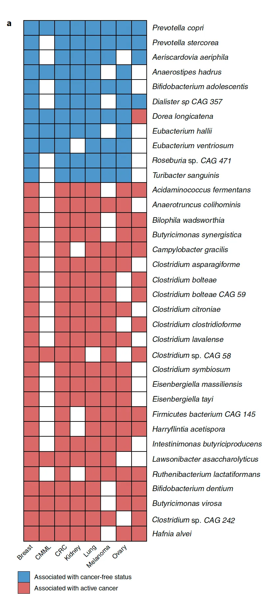
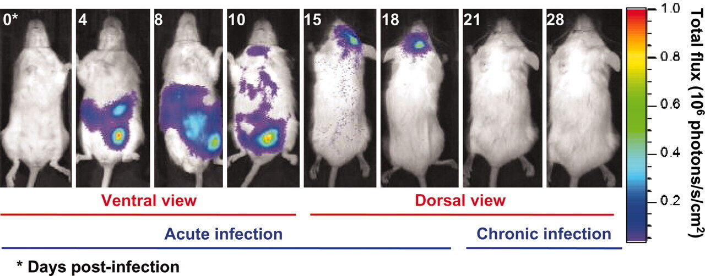

8 Microbes and Health
8.1 Food Allergies
If you attended elementary school before the 1980s, you can remember a time before nut allergies, when school lunches served peanut butter to everyone without the slightest worry that it might cause problems. Now many schools are forced to strictly limit the allowable kinds of food in their cafeterias, even from kids who bring their own lunches. Besides nuts, people suffer from allergies to milk, corn, eggs, fish, shellfish, soy, wheat, and many others.
Oddly, the very existence of food allergies appears to be an entirely modern problem. Medical journals didn’t even mention food allergies until 1969, and examples were extremely rare before that. In fact, the very first mention of a food allergy happened about 100 years ago.1. Human genetics hasn’t changed suddenly in the past half-century, and given the variety of conditions, it seems unlikely that we can blame it on a single toxin or industrial pollutant.
Several intriguing clues point in the direction of microbes as the cause of allergies. One theory, known as the “hygiene hypothesis”, says that our modern environments are too sterile, that the immune systems of growing children need to be challenged by threatening invaders from time to time or they become overly sensitive. Now another idea, the “old friends” hypothesis suggests that it’s not the hygienic conditions and lack of microbes per se that drive the autoimmune response, but rather it’s that our bodies have evolved, over untold generations, to expect microbes in the environment, some nasty and some friendly, and when the developing immune system of a child is never exposed to these microbes, a breakdown occurs that misrecognizes certain foods as enemies instead.
Rutgers University scientist Martin Blaser (Blaser 2015) thinks something odd has happened because of the overuse of antibiotics. There are plenty of people in Western societies who suffer far fewer food allergies, people like the Old Order Amish of Pennsylvania, who for centuries have kept to traditional ways of farming and who live in communities largely unaffected by industrialization. Their significantly greater time spent outdoors, challenged regularly by animal and soil microbial pathogens has made them far less likely to suffer from allergies than the rest of the population. Studies of Amish gut microbiomes show strikingly different profiles, generally with higher diversity and numerous microbes rarely found in urban people2.
Asthma, another terrible condition likely sparked by an incorrect balance between hygiene and microbes, points to better times ahead, its numbers of sufferers having peaked in the 1990s and 2000s. In fact, “We have probably seen the worst of the asthma epidemic”3 writes scientist Tim Spector, who suggests childhood asthma has been replaced by food allergies.
The good news is that, armed with our understanding of the relationship between microbes and allergies, new discoveries may offer treatments or even cures.
Evidence showing that Clostridia may counter sensitivity to peanuts 4 has led to additional research behind the source of the problem. Now a new drug, Palforzia, is an FDA-approved treatment option for peanut allegies that works by exposing young children to small doses of the key microbe-stimulating compound in peanuts, letting immature immune systems develop a safer relationship with peanuts. Similar studies are underway for other allergies, lending hope that someday food allergies may once again fade into the background and disappear as they did 100 years ago.
Cathryn Nagler’s lab has identified Anaerostipes caccae as a key microbe that protects against allergic reactions.5
8.2 Obesity
Obese and diabetic people are subject to more infections than healthy people, but interestingly it’s not the body mass index that drives this, but rather the accompanying hyperglycemia.6
8.3 Hygiene
THIS CHAPTER IS STILL IN DRAFT
Microbiome diversity protects against pathogens by nutrient blocking : “Colonization resistance” is an ecological phenomenon. A diverse variety of microbes working together can hold back pathogens by soaking up nutrients.
Now for some speculation. I can’t prove any of this, but these are some questions possibly worth asking:
What does (underarm) deoderant do? Although rich people soaked themselves with various colognes for thousands of years, the widespread use of deoderant is less than 100 years old.
Why do you have sweat glands there in the first place? Sweat is supposed to help cool your body, but not much cooling will happen from a surface that’s not exposed to much air. Instead, those glands feed bacteria, especially the Actinobacteria, including Corynebacterium that generate those molecules that you can smell. 7
Similar to the way some people do fecal transplants to modify their gut bacteria, someday it may be possible to do arm pit bacteria transplants.
How often should you brush your teeth?
Washing your hands in a public restroom
In Westernized countries for the past hundred years, it’s been taken for granted that everyone should wash their hands every time they use the toilet, especially in a public place. Washing with soap and water, of course, is an effective way to remove harmful microbes, but I wonder what happens to your hands after washing, when you turn off the faucet or help yourself to the paper towel machine. Even in a restroom with those fancy automatic on/off devices, you still probably touch the doorknob on your way out.
We know that fecal matter often harbors pathogenic microbes, and of course the act of doing your business makes it likely that your hands will come closer to unpleasant waste products, but I wonder: most of the microbes you’re touching are already on your body. I suspect that microbes optimised for some parts of your body won’t do well on the hands anyway. But meanwhile, that faucet is being handled all day by crowds of strangers, each hosting microbes that probably enjoy the moist, pleasant surfaces of the bathroom sink.
Isn’t it better to enter and leave the public restroom without touching anything other than yourself?
If you do wash your hands in the restroom, what’s the best way to dry them afterwards? The short answer: paper towel: the friction from rubbing your hands helps loosen and dislodge microbes, while an air dryer can just spread more germs into the air. If you’re concerned about the environment from all that paper towel waste, a careful analysis of the tradeoffs shows that both methods are about equivalent once you take into account manufacturing, installation, electricity, and final disposal costs.
How to wash food in the kitchen
By far the most common source of pathogens in food happens during meal preparation. This makes it tempting to wash everything over and over throughout the cooking process, but be careful: you might just be splashing those microbes onto other surfaces throughout the kitchen.
If you wash a whole chicken in your sink, for example, any germs on the exterior will unavoidably find themselves in tiny water molecules that may land anywhere in the kitchen. You’ll scrub the counters afterwards, of course, but beware that it’s hard to disinfect everywhere: the curtains? the ceiling?
Like most battles with microbes, there’s a tradeoff between killing large numbers in a visible way (“carpet-bombing”) and preventing them from gathering in volumes in the first place.
Generally it’s best to leave food untouched if you’ll be cooking it. Fruits and vegetables meant for eating raw should be cleaned, but just rinsing with water isn’t going to dislodge the serious pathogens. Rinsing in vinegar or other acidic chemicals can kill most of the germs, at the expense of some flavor.
Ultimately the only sure way to beat pathogens in the kitchen is through high heat, so if you have reason to suspect that your food might be contaminated, you should cook it.
The dangers of kitchen sponges
A widely publicized 2017 study claimed that one of the most deadly microbial reservoirs in your kitchen might be the commmon scrub sponge. The porous nature of a sponge, the researchers claimed, let harmful microbes hide and breed, even after running them through a hot dishwasher or microwave oven. But a closer look shows the study used only 17 sponges, and the microbes found were all harmless, generally found on skin (as I confirmed myself in my Skin Experiments.
Microbes and cooking
Few microbes that inhabit human bodies are able to survive long at temperatures over 165 degrees (F).
8.4 Cancer
8.4.1 A microbiome-based cancer diagnostic
An all-star team from the highly-regarded Rob Knight lab at UCSD published in Nature (2020) a ground-breaking study that showed how cancer could be diagnosed through microbiome testing.8, but a team of Johns-Hopkins statisticians (Gihawi et al. 2023) showed that there were several errors in the study. Knight’s team did a reanalysis and claims that a later replication indicates that an association exists whether it’s those particular microbes involved or not.9
8.4.2 Targeting microbiota in cancer
see April 2022 Targeting the gut and tumor microbiota in cancer
Park, E.M., Chelvanambi, M., Bhutiani, N. et al. Targeting the gut and tumor microbiota in cancer. Nat Med 28, 690–703 (2022). https://doi.org/10.1038/s41591-022-01779-2

Jeff Lapides and others from Drexel find Evidence supportive of a bacterial component
We detected bacteria in the brains of both cohorts with the principal bacteria comprising Cutibacterium acnes (formerly Propionibacterium acnes) and two species each of Acinetobacter and Comamonas genera.
The AD-related pathogenicity of the brain microbiome seems to be based on a complex polymicrobial dynamic. The time ordering revealed a rise and fall of the abundance of C. acnes with pathogenicity occurring for an off-peak abundance level in association with at least one other bacterium from a set of genera that included Methylobacterium, Bacillus, Caulobacter, Delftia, and Variovorax. C. acnes may also be involved with outcompeting the Comamonas species, which were strongly associated with non-demented brain microbiota, whose early destruction could be the first stage of disease. Our results are also consistent with a leaky blood–brain barrier or lymphatic network that allows bacteria, viruses, fungi, or other pathogens to enter the brain.
8.5 Parkinsons Disease
See Jun 2022 Review: Gut Microbiota: A Novel Therapeutic Target for Parkinson’s Disease
Parkinson’s disease (PD) is a neurodegenerative disorder that is the second-most common after Alzheimer’s disease. Here is a general overview of PD and its known demographic factors:
- Age of Detection:
- Sex:
- Men are 1.5 times more likely to have Parkinson’s disease than women.
- The male-to-female ratio of PD may change with age, suggesting that the etiology of PD may vary across different age groups14.
- Geography:
- The prevalence and incidence of PD can vary by geographic location.
- A study in North America found that the age-sex-adjusted incidence of PD ranged from 108 to 212 per 100,000 among persons ages 65 and older15.
- Geographic and ethnic variations in PD have been observed, but further research is needed to understand the underlying factors.
It’s important to note that these demographic factors are based on available research and may not capture the full complexity of PD. The understanding of PD is constantly evolving, and further research is needed to uncover additional factors that may contribute to the development and progression of the disease.
Later I’ll describe my own Personal Science observations about the link with Parkinsons
Also see the link with trichloroethylene (TCE), used to decaffeinate coffee, degrease metal, and dry clean clothes
8.6 Other conditions
Some people claim you can treat migraine headaches, sinusitus, and other conditions by inserting Lactobacillus-containing Kimchi up the nostril. I’ve not tried it and can’t vouch for it, but let me know if it works for you.
8.7 Microbes and Behavior
Your gut contains 100 million neurons16, which incidentally is about the same as an entire mouse. With all those neurons touching microbes, it’s not surprising that there are links with behavior.
Toxoplasma Gondii is a tiny microbe that, for some reason, only likes to reproduce from within the gut of a cat. It can be found in almost all warm-blooded mammals, including humans — about 30% of us, according to some estimates, and that’s after a century of obsession with hygiene that has wiped out countless other tiny inhabitants of the body.
T. Gondii seem harmless because its hosts appear to show no differences before or after “infection” except in one creature: the rat. In this classic experiment17, rodents that were infected with Toxoplasma gondii were studied with special dyes that can show how the infection spreads, first in the gut and then to the brain.

When it finds itself ingested by a mouse or rat, it appears to fade away quietly. MRI scans show large amounts in the gut for a week or two, gradually decreasing until there is apparently nothing. By day 18, the last remnants of the infection are disappearing from the brain, except for tiny T. Gondii cysts. Not everywhere, but in just a few strategic places.
Then something strange happens: the rat is now unnaturally attracted to cat urine. And note: its only attraction is to cat urine, not rabbits, not humans — only cats. Everything else about the rat appears normal. It still seems to be afraid of the other things that scare rats: other predators, stressful situations. But put a T. Gondii-affected rodent into a maze with different animal urine in the corners and it will rush to the cat side every time.
How is it that T. Gondii is able to be so precise in its effects? It seems to affect just rodents18 , and even then it only apparently makes them attracted to cats. It doesn’t apparently cause any other harm to its hosts, so — somehow — it must have found a resting place right at the spot in the mouse brain that affects its interest in cats.
Although there doesn’t seem to be any major negative consequences to humans hosting T. Gondii, some scientists aren’t sure. One man in particular, Jaroslav Flegr, an evolutionary biologist at Charles University in Prague, thinks he has evidence that women who carry it might be more trusting than those who don’t.
Incidentally, some of the drugs used to treat schizophrenia have been shown to reduce levels of T. Gondii.
And T. Gondii’s ability to cross the blood-brain barrier may make it a potential vector to deliver therapeutics, eventually helping to treat (or cure) brain illnesses like Alzheimers. A University of Glascow - Tel Aviv University team did just that with an engineered version that successfully delivered the MeCP2 protein to the correct target location in brain organoids. 19
T.Gondii isn’t the only microbe known to affect the behavior of its host. A more common example is the rabies virus, which upon infection somehow causes a mammal to be more agitated, more likely to strike out — or bite — other humans, thereby spreading itself.
Or syphilis, the disease spread by Treponema pallidum that causes its host to go insane. The microbe is somehow able to infect the mind of the victim.
In general, sexually transmitted diseases are especially likely to have behavioral consequences. A sexual disease that produces symptoms is unlikely to spread, yet it still requires contact with a new victim. Perhaps the ideal vector is a behavioral change, making the host more likely to come in contact with a new host.
A well-done 2019 study20 found that people suffering from depression have significantly lower levels of two groups of bacteria, Dialister and Coprococcus, possibly due to a potential ability of the gut microbiome to synthesize 3,4-dihydroxyphenylacetic acid, a breakdown product of the neurotransmitter dopamine.
There are many other examples of microbes that appear to affect the brain:
5-HTP is an intermediate molecule between tryptophan and serotonin. It is produced by Candida, Streptococcus, Escherichia, and Enterococcus.
Bacillus and Serratia make dopamine
Escherichia, Bacillus, Saccharomyces make noradrenaline
Lactobacillus can produce acetylcholine
GABA can be produced by Lactobacillus and I.
Bacteroides Fragilis is depleted in autistic patients. it is a gatekeeper for the immune system [ http://www.ncbi.nlm.nih.gov/pubmed/16009137]
Sutterella may have implications for autism, causes tics ?
Bifidobacterium infantis: see Sudo, Chida for gnobiotic mice that it prevents from becoming stressed.
Mark Lyte and his colleagues, a microbiology team from the Minneapolis Medical Research Foundation, studied the effect of infecting mice with Campylobacter, one of the bacteria implicated in the Walkerton epidemic. The dose of bacteria was high enough to be detected in the intestine, but not so high that the mice developed overt illness. You probably won’t be surprised to learn that the campylobacter-infected mice exhibited more anxiety when navigating a maze than the control mice.
Lactobacillus rhamnosus is lower in pups born to pregnant mothers under stress. Intrigingly, this species is linked to levels of GABA, an important neurotransmitter targeted by anti-anxiety drugs like Valium and Xanax.21 What’s more, in mice the action of these microbes seems modulated by the vagus nerve – mice who have their vagus nerve removed seem to be unaffected by GABA.22
Scientists in Japan characterized the microbiome of 25 anorexia nervosa patients and compared them to healthy controls. The AN patients had a lower amount of total bacteria and specifically, lower amounts of Clostridium coccoides group, C. leptum subgroup, Bacteroides fragilis, and Streptococcus.23
Or consider the bacterium Tropheryma whipplei, the infectious cause of Whipple’s disease. Sufferers often have neurological symptoms like memory loss and odd eye and face movements called oculomasticatory myorhythmia, which indicate that somehow the microbe has invaded the nervous system.
Autism (which we’ll discuss later), is often accompanied by a strange craving for propianate-heavy products like bread. You can see videos showing how rats behave when given too much propionate.
We all know people who seem exceptionally fastidious, some who are diagnosed with Obsessive Compulsive Disorder (OCD). The bacterium Streptococcus become relatively more abundant after hand-washing, so they influence the basal ganglia to do more hand-washing? Is that a coincidence?
Think about this too much, and you’ll end up with the obvious question: what other weird microbes are infecting us right now? Can we explain some of our own behaviors this way? Is there a human equivalent of these infections, driving us to do things we “ordinarily” wouldn’t do? And maybe these microbes are so ubiquitous, teeming all over us and in our brains, maybe there’s no way to even know what “ordinary” or “normal” human behavior is.
as mentioned in Spector (2016) referring to Golbert, T.M., J Allergy (Aug 1969); 44(2): 96–107. Systemic allergic reactions to ingested antigens and Schloss, O., Arch Paed (1912); 29: 219. A case of food allergy↩︎
http://www.sciencemag.org/news/2014/08/gut-microbe-stops-food-allergies↩︎
Feehley et al. (2019) (download the full text here: https://cpb-us-w2.wpmucdn.com/voices.uchicago.edu/dist/e/1480/files/2019/07/Feehleyetal.pdf)↩︎
see Callewaert et al. (2014) and http://www.realclearscience.com/blog/2014/08/antiperspirants_alter_your_armpit_bacteria_and_could_actually_make_you_smell_worse.html↩︎
https://www.ninds.nih.gov/current-research/focus-disorders/focus-parkinsons-disease-research/parkinsons-disease-challenges-progress-and-promise↩︎
https://www.parkinson.org/understanding-parkinsons/statistics↩︎
https://academic.oup.com/aje/article/157/11/1015/151509↩︎
https://www.ncbi.nlm.nih.gov/pmc/articles/PMC2865395/↩︎
https://jnnp.bmj.com/content/87/9/952↩︎
https://www.nature.com/articles/s41531-022-00410-y↩︎
new evidence shows it may make wolves more aggressive: https://www.nature.com/articles/s42003-022-04122-0↩︎
Bracha, S., Johnson, H.J., Pranckevicius, N.A. et al. Engineering Toxoplasma gondii secretion systems for intracellular delivery of multiple large therapeutic proteins to neurons. Nat Microbiol (2024). https://doi.org/10.1038/s41564-024-01750-6↩︎
See a detailed discussion in the New York Times: https://www.nytimes.com/2015/06/28/magazine/can-the-bacteria-in-your-gut-explain-your-mood.html↩︎
http://www.microbiomeinstitute.org/blog/2016/1/7/gut-dysbiosis-in-anorexia-nervosa-patients↩︎